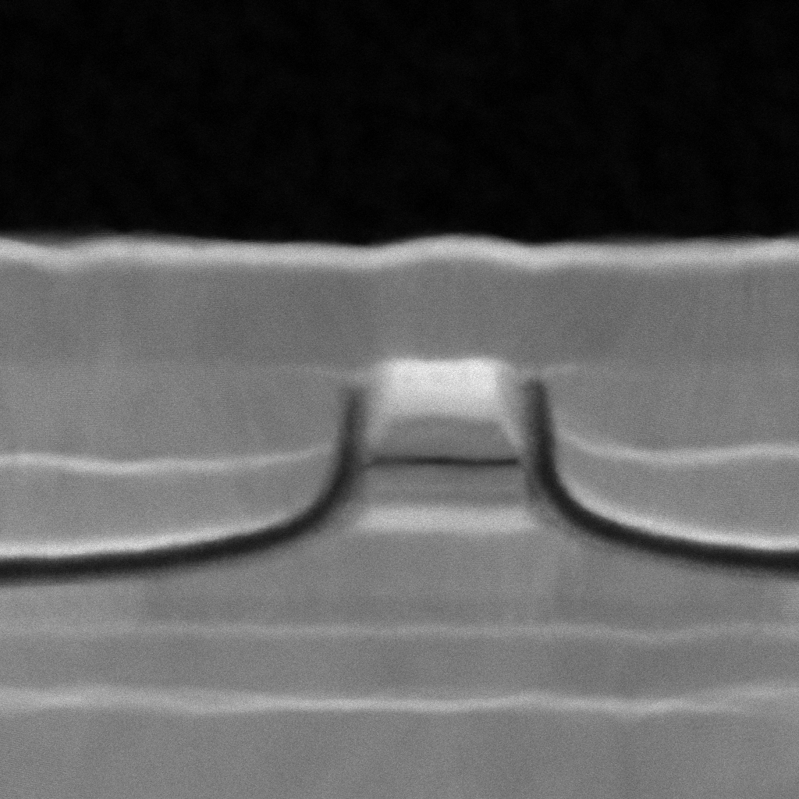
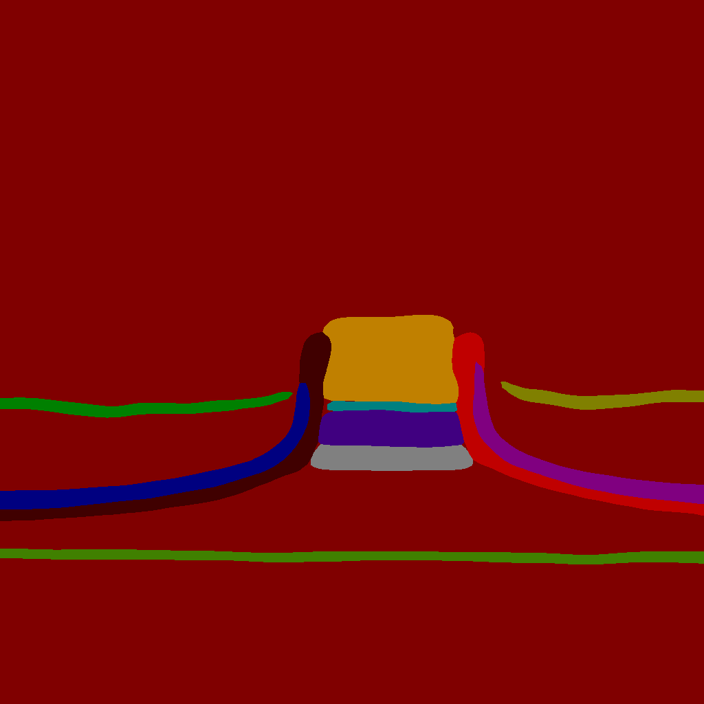
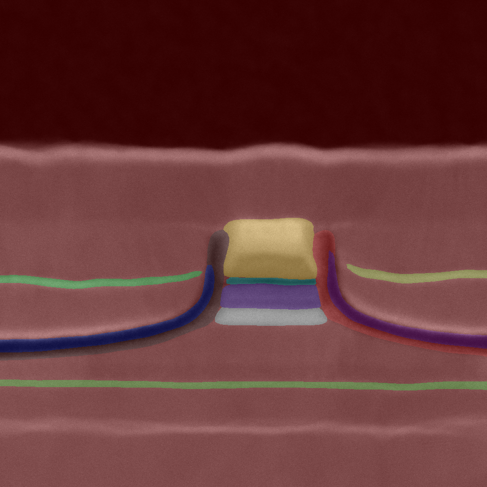
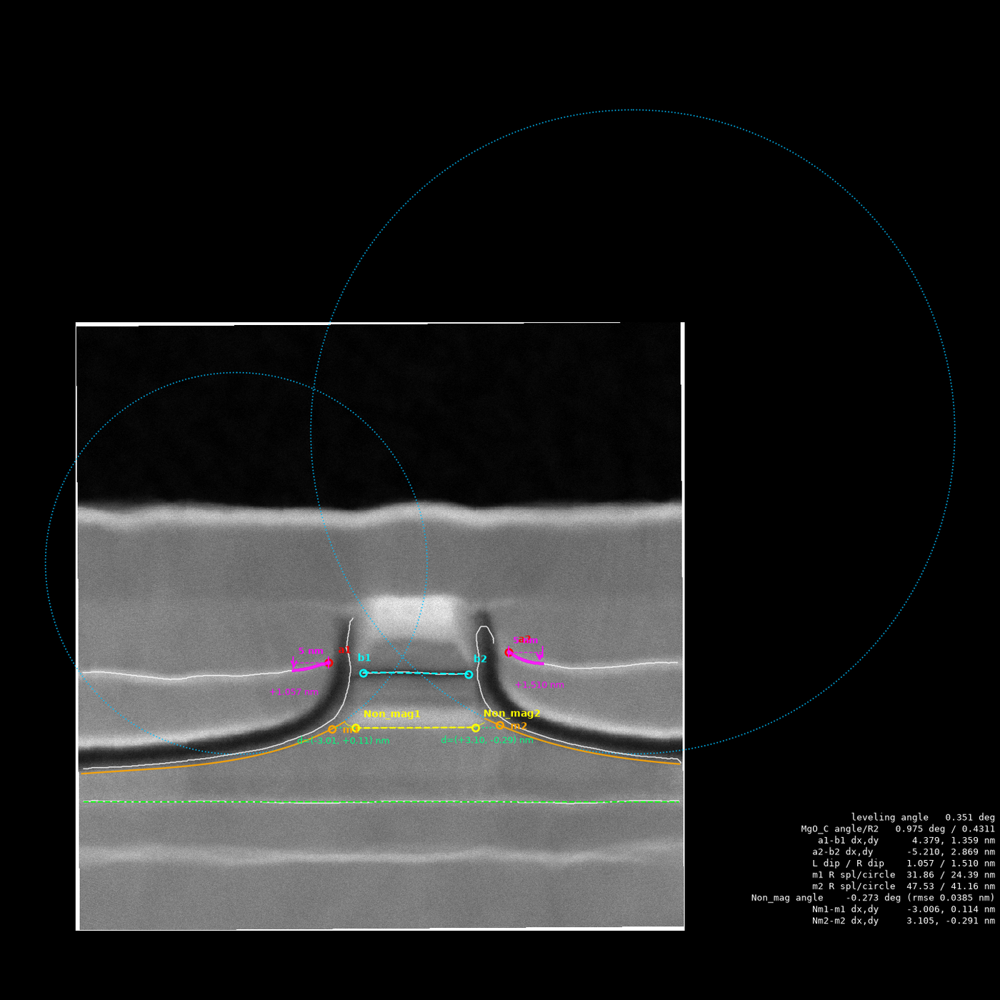
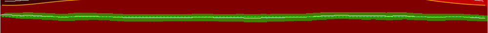
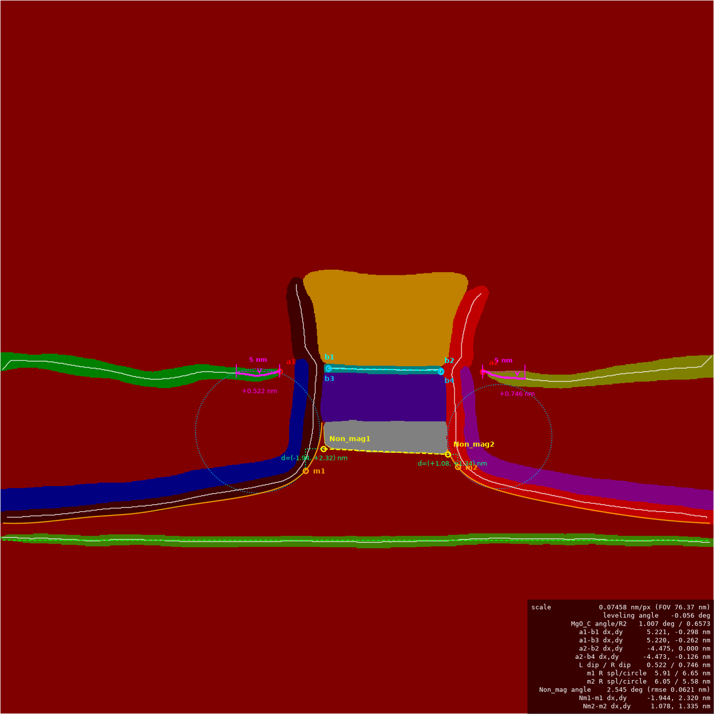
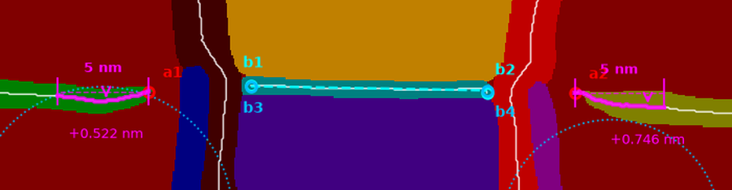
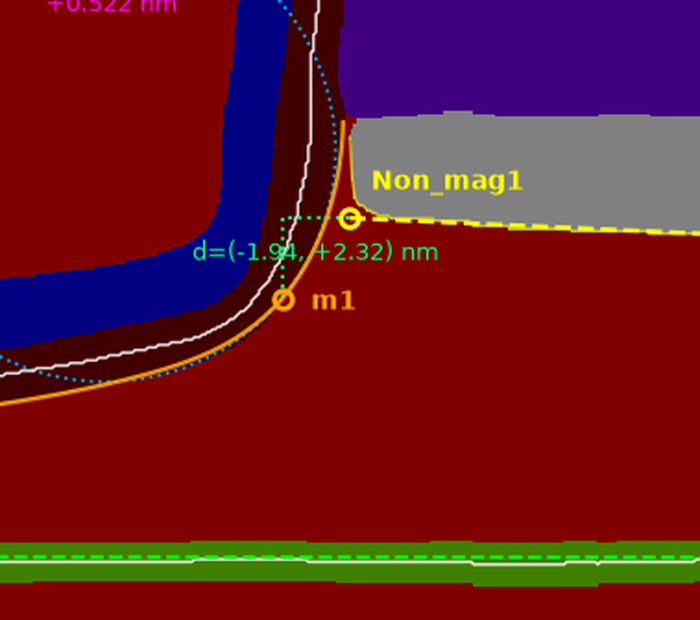
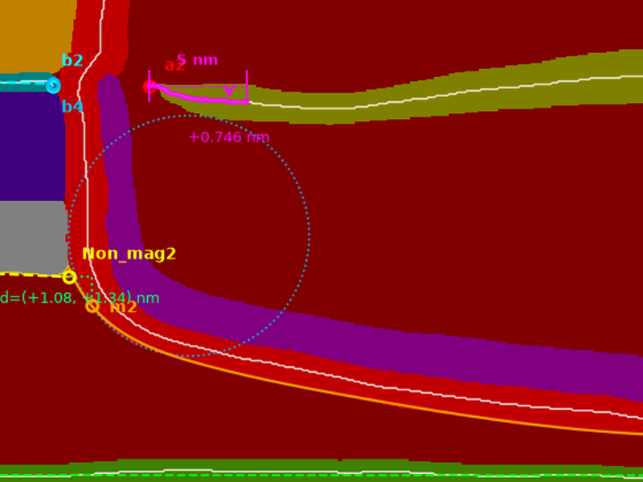
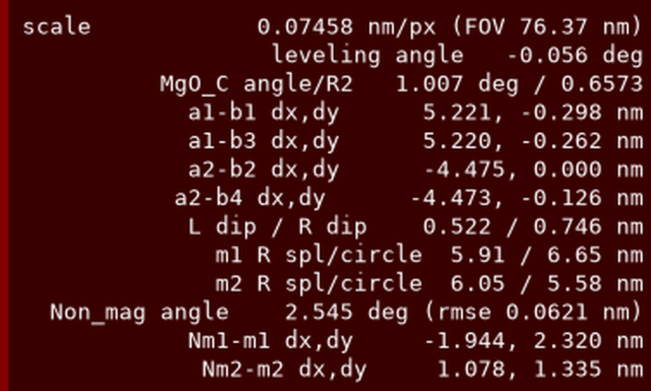

用语义分割把 TEM 断面拆成 11 个结构层，再在标签图上做亚纳米级几何量测。 逐图输出 JSON 与叠加图，批量输出固定列 CSV。
← → 翻页 · Esc 目录 · F 全屏 · Ctrl+P 导出 PDF
TEM 断面照片的结构尺寸，以前靠人在图上手动拉线量。
| 以前 | 问题 |
|---|---|
| 人工拉线量 | 一张图几分钟，一个批次一天 |
| 凭经验找端点 | 换个人结果就变，不可复现 |
| 结果记在表格里 | 批次之间口径不一致，没法比 |
| 只有最终数字 | 出了异常，查不到是哪一步的问题 |
| 现在 | 怎么解决 |
|---|---|
| 分割模型认层 | 批量自动，26 张一次跑完 |
| 确定性几何算法 | 同一张图永远同一个数 |
| 机器可读字段 | JSON + 固定列 CSV，口径写进数据本身 |
| 叠加图 + warnings | 每个数都能追到图上位置和算法参数 |
两个阶段之间唯一的接口，就是分割模型输出的伪彩标签图。


pseudo_color_prediction/
added_prediction/
*_overlay.png这是整条链路唯一的耦合点，所以工具主动做了防呆。
added_prediction/ — 原图与掩膜的混合预览工具的做法：把 RGB 往标准调色板上吸附，统计离色像素比例，超过 5% 就直接报错。
P / L 模式 → 索引即类别 id，直接读
RGB 模式 → 吸附到调色板，离色 >5% 报错
其它模式 → 不支持build_palette() = PASCAL VOC colormap 去掉首个黑色项，所以 类别 id == 调色板索引。
标注工具和量测工具共用同一个函数，两边不可能走偏。tools/napari_seg/annotate.py — 输出目录直接就是可训练的分割数据集。
<out>/
JPEGImages/ 原图（文件名已 ASCII 安全化）
Annotations/ 8-bit 调色板 PNG，像素值 == 类别 id
train.txt "JPEGImages/x.jpg Annotations/x.png"
val.txt
class_names.txt 首行永远是 _background__，
重名加 _2/_3。--print-names --no-gui 可先预览改名结果。| 要点 | 说明 |
|---|---|
| 类别顺序即 id | 本项目 11 类 + 背景 = 12。顺序一变，所有历史标签全错位，所以固化在 class_names.txt 里随数据集走 |
| 断点续标 | 不带 --classes 再开同一个 --out，类别自动读回 |
| 类别清单 | SAF_Ru_L/R · MgO_L/R/C · Non_mag · Milling_L/R · Leveling · Block_U/D |
网页端不让人写整份配置，而是拆成三份独立维护、启动时合并。
数据集配置 ─┐
训练配置 ─┼─► 深合并 YAML ─► 训练入口脚本 ─► stdout 解析进 TrainingLog 表
模型配置 ─┘
优先级：dataset → training → model（后者覆盖前者，逐 key 合并）| 配置 | 负责 | 典型内容 |
|---|---|---|
| 数据集 | 数据从哪来 | train_dataset / val_dataset / dataset_root / num_classes / transforms |
| 训练 | 怎么练 | batch_size / iters / optimizer / lr_scheduler |
| 模型 | 练什么 | model（架构 + backbone）/ loss |
yaml.parse() 读就抛 Map keys must be unique。
train_dataset.transforms 里的一项，
不用把整个数据集块重抄一遍。全部是踩过的坑，每一条都会让训练直接失败，或让配置静默不生效。
iters 才是总步数，warmup_iters、save_interval 同理。
数据库里那几个 epoch 命名的列，对分割项目存的其实是迭代数。len(loss.types) 必须等于模型输出的 logits 数
主头 + 辅助头。不匹配就是 RuntimeError: The length of logits_list should equal to the types of loss config。
loss: 永远写在模型配置里，绝不写在训练配置里 —— 这样任意训练预设都能和任意模型预设自由组合而不会配错。| 架构 | logits | 架构 | logits |
|---|---|---|---|
| UNet | 1 | PP-LiteSeg (STDC1/2) | 3 |
| DeepLabV3+ | 1 | BiSeNetV2 | 5 |
| OCRNet | 2 | — | — |
save_dir / save_interval / log_iters 是命令行参数，不是 YAML 键
写进 YAML 不会报错，但不生效 —— 这是最容易被忽略的一条。平台服务端生成并执行的训练命令
<python> -m <distributed-launcher> --gpus 0 `
tools/train.py `
--config "<merged>.yml" `
--do_eval `
--save_dir "<output>/jobs/<job_name>"frameworks.ts::getWorkDir() 按 project.framework 解析command（shell:true 执行）；--gpus 严格白名单EVAL 是多行块，解析器有状态，累积完整块才产出 mIoU / Acc / Kappa / Dice伪标签闭环：数据集滚雪球
# 预测
<python> tools/predict.py --config <merged>.yml `
--model_path <output>/best_model/<weights> `
--image_path <new_batch> --save_dir <pred>
# 导回标注器，人工只做修正
<python> tools/napari_seg/annotate.py `
--images <new_batch> --out <dataset> `
--import-masks <pred>/pseudo_color_prediction--overwrite 才覆盖），--no-gui 可只导入不开界面。独立 CLI，依赖 numpy / Pillow / scipy / matplotlib（+ 可选 opencv-contrib）。
# 批量 + 汇总 CSV + 叠加画在原始 TEM 图上
python tools/tem_analysis/analyze.py `
--mask-dir ...\pseudo_color_prediction `
--out ...\analysis `
--overlay-on ...\normal_test `
--csv summary.csv
# 自检（合成几何 + 已知真值，不需真实数据）
python tools/tem_analysis/selftest.py| 文件 | 职责 |
|---|---|
analyze.py | CLI、标尺、按注册表跑量测、失败隔离、落盘 |
labelmap.py | 伪彩 PNG → id 数组；连通域清理；FOV 解析 |
rectify.py | 校平仿射 + 逆变换 |
skeleton.py | Guo–Hall 细化、最长路径、Polyline |
contour.py | 有序外轮廓、环形最长连续段 |
geometry.py | TLS/OLS、σ 剔除、圆拟合、B 样条曲率 |
context.py | 缓存、单位换算、双坐标、warnings |
measures/*.py | 7 个 measure(ctx) -> dict |
report.py | JSON / 固定列 CSV / 叠加图 |
Milling_L，只会让 results.milling_l
变成 null 并写一条 warning，其余 6 项照常输出，批处理继续往下跑。opencv-contrib 就用 cv2.ximgproc.thinning，没有就退回
skeleton.py 的 NumPy 版。自检验证两者逐像素一致，只是慢一点 ——
部署环境缺 cv2 不影响结果。params 字段。
任何一个数字都能回答"是用什么设置算出来的"。标尺（nm/px） 默认从文件名正则取视场：
..._FOV_76.37nm.png → 76.37 nm，再除以图像实际宽度。
样本批次 26 张全部解析成功：76.37 / 1024 = 0.074580 nm/px。
fov_nm / image_width_px / scale_nm_per_px / scale_source 全部记进 JSON 和 CSV--scale-nm 时直接报错，不会静默用错标尺校平（rectification） Leveling 层拟合直线得倾角，整图旋转到水平后再量。
"dy 是向下偏了多少"这句话，只有校平之后才有物理意义。
255(ignore) 而非 0(背景) —— "画幅之外"与"预测为背景"因此可区分，M5 排除切边全靠它--no-rotate 可完全避开
按注册表顺序执行，后面的可以读前面的结果。
leveling → mgo_c → interfaces → milling_l
→ milling_r → non_mag → corner_offsets| 模块 | 量什么 |
|---|---|
M1 leveling | 样品倾角 + Leveling 层平直度 → 定义整图校平 |
M2 mgo_c | MgO_C 拟合直线：倾角、平直度、端点 b3/b4 |
M3 interfaces | a1/a2 ↔ b1..b4 的 dx/dy —— 核心指标 |
M4 *_dip | 端点 5 nm 弧长内的最大下沉量 |
M5 milling_l/r | 研磨面曲率最大点 m1/m2 与半径 |
M6 non_mag | 背离 Block_D 的横向边缘与端点 Non_mag1/2 |
M7 corner_offsets | Non_mag1↔m1 / Non_mag2↔m2 的偏移 |

leveling — 整图校平基准唯一一个"结果会反过来影响其它所有量测"的模块。
| 定义 | Leveling 类 → 最大连通域 → Guo–Hall 骨架 → 直线拟合 → 倾角 |
|---|---|
| 角度 | 用 TLS（总体最小二乘）。OLS 在残差与 x 跨度可比时会系统性压平斜率，TLS 对方向无偏 |
| R²/rmse | 用 OLS y~x，因为"fit R²"通常就是这个意思。两者都输出，差异摆在明面上 |
| 可靠性 | angle_stderr_deg（斜率标准误），不看 R² |
| 自检 | 校平后重新拟合，残余角 > 0.05° 告警 |
| 实测 | 26 张倾角中位数 0.259°，范围 −2.263°～+1.002°（上样倾斜在 ±2° 内） |
R² = 1 − SS_res/SS_tot，而水平层的 SS_tot（y 的方差）本身极小 ——
一条 1029 px 长、rmse 仅 1.9 px 的优秀直线，也只能得到 R² ≈ 0.02。
fit_r2_degenerate: true
和 fit_r2_note 说明。
rmse 与 max_residual。mgo_c — MgO_C 平直度与倾角| 定义 | MgO_C 骨架 → TLS 直线 |
|---|---|
| b3 / b4 | 把骨架 x 最小/最大的极值点投影到拟合直线上得到的线段端点 |
| 输出 | 角度、fit_r2(+退化标记)、fit_slope/intercept、rmse、max_residual、perp_rmse、b3/b4、fit_length、residual_profile |
| 实测 | rmse ≈ 0.045 nm (0.6 px)，max_residual ≈ 0.126 nm；倾角批次内 −3.5°～+3.5° |
b1/b2 是骨架的真实端点，b3/b4 是直线模型上的端点。
两者之差 = 该处层的局部起伏。
a1→b1 和 a1→b3 同时给出：前者对准真实端点，后者对准模型、对局部毛刺不敏感。
b3 的 dy 离散度更小。
interfaces — 层间端点偏差（核心指标）| 端点定义 | a1 = SAF_Ru_L 骨架 x 最大端 · a2 = SAF_Ru_R 骨架 x 最小端b1/b2 = MgO_C 骨架 x 最小/最大端 · b3/b4 = MgO_C 拟合线段端点 |
|---|---|
| 四组偏移 | a1_b1 · a1_b3 · a2_b2 · a2_b4，各含 dx/dy/distance（px + nm） |
| 符号约定 | dx>0 = b 在 a 右侧；dy>0 = b 比 a 更低。这句话原样写在每个 offset 的 convention 字段里 |
| 实测 | a1_b1.dx 中位数 +5.332 nm (σ 0.61)，a2_b2.dx −5.332 nm (σ 0.50) —— 左右严格对称 |
--endpoint-extend region 可沿切线外推补偿（该模式下自检 a1 误差为 0），默认关闭以忠实于 Guo–Hall。
*_dip — 端点 5 nm 内的最大下沉量从 a1（或 a2）沿骨架回走 5 nm，这段里层最多往下掉了多少。表征端点附近的塌陷。
| 基准 | 端点自身：dev = y − y(端点)，正值 = 更低 |
|---|---|
| 窗口 | 沿弧长回走，不是沿 x |
| 输出 | window · window_polyline · max_downward_deviation · max_downward_point · max_downward_arclength · max_abs_deviation · deviation_profile |
| 实测 | 左 0.597 nm（0～1.417），右 0.709 nm（0.224～1.268） |
deviation_profile 也写进 JSON
想换个窗口长度、或想确认"最大值是不是一个孤立毛刺"，不必重跑整批，直接在 JSON 上复核。
curvature_profile、M2 的 residual_profile 同理 ——
这是贯穿整个工具的一条设计原则。milling_l/r — 取哪一侧？一条 Milling 带有两个侧面：一侧贴器件，一侧朝真空。要量的是离子研磨真正加工出来的那面。

outer = 保留"不与任何其它类相邻"的边界像素，再取轮廓顺序上最长连续段。与骨架法向彻底无关。i= 411 p=(420,682) +n→_background_ -n→MgO_L
i= 651 p=(431,443) +n→Block_U -n→_background_milling_l/r — 定位靠样条，量值靠密切圆整条边用三次 B 样条平滑后取解析曲率 κ(s)。直段 κ≈0 抢不到最大值，所以不需要真的去拟合"直—弯—直"分段模型。
s 匹配，而少数几段三次曲线撑不住恒定曲率。
在真值半径 200 px 的合成弧上：样条报 168 px（−16%），密切圆报 190 px（−5%）。| 字段 | 用途 | 说明 |
|---|---|---|
radius / kappa_* | 定位 m1/m2 | 来自样条解析导数，位置可靠，幅值偏小 ~15% |
local_circle.radius | 看幅值 | 在同一点对原始边缘点拟合的圆，精度约 5% |
local_circle.rms | 可信度 | 真实拐弯不是圆弧，1–2 px 正常；>3.5 px 才置 reliable=false 并告警 |
tail_left/right | 模型校验 | 两端各 25% 弧长的直线拟合，验证"直—弯—直"；也可当研磨侧壁角 |
--milling-middle-frac 默认 1.0（不限制中段）——
直段本来就抢不到最大值。最大值若落在搜索带边界上会告警。magnitude_note 字段直接告诉读数据的人"该用哪个半径"，不依赖有没有人读过文档。
non_mag — 横向边缘与端点
| 取哪条边 | 默认 auto：统计上下两条边与 Block_D 接触的列数，取接触少的那条。样本图 top:172 / bottom:0 → 取下边缘。不写死 "bottom"，是为了样品倒装或类别重标时不会悄悄量错界面 |
|---|---|
| 边缘提取 逐列取最极端的前景像素。Non_mag 上下缘都是 x 的单值函数，所以这就是边缘，无需分侧启发式 | |
| 拟合 σ 剔除（默认 2σ）的 TLS。左右两角是圆倒角，不剔会把直线拽歪 | |
| 端点 把拟合直线向外延伸到区域 x 最小/最大列，而不是停在参与拟合的列上 | |
corner_offsets — Non_mag 端点 ↔ Milling 拐点量 Non_mag1→m1 与 Non_mag2→m2 的 dx/dy 和直线距离。
| 特殊之处 | 唯一一个组合其它量测结果的模块。不重算，而是从 ctx.results 里把 M5、M6 的结果读回来 |
|---|---|
| 顺序约束 | 因此在注册表里必须排在 non_mag / milling_* 之后 |
| 降级 | 任一侧依赖的量测失败时，该侧单独变成 null，另一侧照常输出；两侧都拿不到才整个模块失败 |
| 叠加图 | 青绿色点划折线，横竖两段分别对应 dx 和 dy |
| 实测 | Nm1→m1.dx 中位数 −1.251 nm，Nm2→m2.dx +1.288 nm（左右反号，对称） |
ctx.measured_point() 把点读回来即可。失败降级也是逐侧的，
所以一张丢了单侧 Milling 的掩膜，另一侧的偏移依然有效。a = ctx.measured_point("non_mag", "Non_mag1")
b = ctx.measured_point("milling_l",
"max_curvature_point")
if a is None or b is None:
ctx.warn(...); return {...: None}
return {..., **ctx.offset(a, b)}| 文件 | 内容 | 用途 |
|---|---|---|
<stem>.json | 全部指标 + 全部输入参数 + 曲线序列 | 唯一完整记录，可复核、可重现 |
<stem>_overlay.png | 骨架、拟合线、密切圆、标注点与数值图例 | 人眼复核："量对地方了吗" |
summary.csv | 一行一图，固定 73 列 | 批次统计，拉进 Excel / pandas |
Milling_L，整列就消失，两个 CSV 对不上。
report.py::CSV_COLUMNS，缺的值填空，列数永远一致。
列名就是 JSON 里的点分路径，两者零翻译成本。n_warnings > 0 排序，逐一看这些图的 _overlay.pnglocal_circle.reliable == false 的行这三个复合结构覆盖了 JSON 里 90% 的字段。
// ① 距离 — 永远同时给 px 和 nm
"rmse": { "px": 1.9419, "nm": 0.14483 }
// ② 点 — 同时给校平后坐标和原图坐标
"a1": {
"x_px": 401.0, "y_px": 532.0,
"x_orig_px": 400.52, "y_orig_px": 531.61
}
// ③ 偏移 — 符号约定随数据一起走
"a1_b1": {
"dx": { "px": 70.0, "nm": 5.2206 },
"dy": { "px": -4.0, "nm": -0.2983 },
"distance": { "px": 70.11, "nm": 5.2291 },
"convention": "dx>0: b is right of a;
dy>0: b is lower than a"
}| 字段族 | 含义 |
|---|---|
angle_deg_image | 图像坐标（y 向下，顺时针为正）。看叠加图时用 |
angle_deg_math | 数学坐标（逆时针为正）= −image。写公式时用 |
fit_r2 + _degenerate | 近水平层恒退化，改看 rmse |
rmse / max_residual | 判断平直度就看这两个 |
angle_stderr_deg | 角度不确定度的下界（假设残差独立） |
*_profile / *_polyline | 整条曲线，改参数不用重跑 |
*_note / *_rule / convention | 把"按什么规则算的"写进数据本身 |
params | 本次运行的全部 CLI 参数 |
| 颜色 / 元素 | 对应 |
|---|---|
| 白色细线 — 骨架 | 所有基于骨架的量测 |
| 青色虚线 + b1 b2 | M2 / M3 |
| 深天蓝 b3 b4 | M2 |
| 红色 a1 a2 | M3 |
| 洋红 — 5 nm 窗口全套 | M4 |
| 橙色曲线 + m1 m2 | M5 |
| 天蓝点圆 — 密切圆 | M5 |
| 黄色线 + Non_mag1 2 | M6 |
| 青绿点划 L 形 | M7 |
| 亮绿虚线 | M1 自检 |
--overlay-on 值得一直开着
画在原始 TEM 灰度图上，可同时看出两类错误：几何算错了，和分割本身就错了。
只看伪彩图的话，一个把边界画偏 3 px 的分割结果，叠加图上看起来会完美无缺。
默认参数，全部校平。26 张全部成功，0 失败，累计 9 条 warning（全部是"丢弃小连通域"类，无一影响结果）。
| 指标 | 中位数 | σ | 最小 | 最大 |
|---|---|---|---|---|
a1_b1.dx (nm) | 5.332 | 0.610 | 4.251 | 6.488 |
a1_b3.dx (nm) | 5.333 | 0.610 | 4.254 | 6.495 |
a2_b2.dx (nm) | −5.332 | 0.496 | −5.966 | −4.475 |
a1_b1.dy (nm) | 0.261 | 0.628 | −0.895 | 1.417 |
| 左端 5 nm 下沉 | 0.597 | 0.385 | 0.000 | 1.417 |
| 右端 5 nm 下沉 | 0.709 | 0.274 | 0.224 | 1.268 |
| m1 圆半径 (nm) | 4.835 | 0.837 | 3.731 | 6.653 |
| m2 圆半径 (nm) | 5.329 | 0.795 | 3.982 | 6.769 |
| Non_mag 长度 (nm) | 12.048 | 1.543 | 9.297 | 14.692 |
| Nm1→m1 dx (nm) | −1.251 | 0.532 | −3.334 | −0.693 |
| Nm2→m2 dx (nm) | 1.288 | 0.278 | 0.734 | 2.000 |
| Leveling 倾角 (°) | 0.259 | 0.629 | −2.263 | 1.002 |
| MgO_C 倾角 (°) | −0.341 | 1.601 | −3.541 | 3.540 |
a1_b1 与 a1_b3 差 0.001 nm —— 验证 b3 与真实端点等价plot_summary.py全部为合成几何 + 已知真值，不依赖真实数据 —— 所以可以随时跑、跑得快、结论无争议。
架构就是为"加量测"设计的，不需要改任何已有模块。
def measure(ctx: AnalysisContext) -> Dict[str, Any]:
# 1. 掩膜：prefer_near 让连通域选择依赖邻接而非面积
mask = ctx.mask(CLASS, prefer_near=AWAY_FROM)
# 2. 几何：骨架带缓存
line = ctx.centerline(CLASS, extend=("xmin","xmax"))
tls = fit_line_tls(line.pts) # 角度用 TLS
ols = fit_line_ols(line.pts) # R²/rmse 用 OLS
p1, p2 = tls.endpoints_spanning(line.pts)
# 3. 不确定就 warn，不要静默
if ols["axis"] != "y~x":
ctx.warn("...")
# 4. 距离用 ctx.dist，点用 ctx.point，偏移用 ctx.offset
return {
"skeleton_length": ctx.dist(line.length),
"angle_deg_image": tls.angle_deg_image,
"rmse": ctx.dist(ols["rmse_px"]),
"blockD1": ctx.point(p1),
"blockD2": ctx.point(p2),
"endpoint_rule": "...", # 规则写进数据
}| # | 做什么 |
|---|---|
| 1 | 新建 measures/<name>.py，实现 measure(ctx) |
| 2 | MEASURES 加一行；读别的模块结果就必须排在它之后 |
| 3 | 标量加进 CSV_COLUMNS（点分路径） |
| 4 | 新参数加进 build_parser()，不要写死常数 |
| 5 | 要画图就改 render_overlay() + _legend_text() |
| 6 | selftest.py 加一个合成几何用例 |
| 7 | 更新 readme.md 的量测项表格 |
MissingClass，不要 return Nonectx.dist()，点走 ctx.point()params，可追溯）| 能力 | 状态 | 现状 | 成本 |
|---|---|---|---|
| Block_D 下边缘 blockD1 / blockD2 | 缺失 | readme 和 report.py 注释里还留着痕迹，但 MEASURES 里没有，CSV 也没列。早期需求 7 被 corner_offsets 取代了 | 小 套用 non_mag |
| 逐类形状统计 面积 / 周长 / 骨架长 | 缺失 | 只有个别模块顺带输出了自己那条骨架的长度 | 小 CSV 涨到 ~100 列 |
| MgO_L/R · Block_U | 缺失 | 三类被标注了、也被分割了，但没有任何量测用到（只在 Milling 分侧时当"邻居"） | 取决于需求定义 |
| 层厚度 | 缺失 | 目前全是端点 / 边缘 / 角度，没有"厚度" | 中 需定义法向 |
| 批次统计与画图 | 缺失 | 只出 CSV | 小 |
| 结果回写 DB / 网页展示 | 缺失 | 量测工具是完全独立的 CLI，与平台无代码耦合 | 中 |
| 与人工量测对比验证 | 缺失 | 自检验证"实现符合定义"，没验证"定义符合需求" | 需标定集 |
G:\...\1300kgroup2\normal_test_temfull\ 下有一批更晚（8/10）产出的结果，CSV 559 列，
含 class_shapes.*、block_d_left/right.* 等本仓库不存在的字段，命名风格也不同。
说明曾经存在（或正在别处存在）一个功能更全的变体，但它不在本仓库里。
上表的"缺失"是相对当前仓库代码而言 —— 若那份变体还找得到，很多项可直接移植。这几条不是 bug，是方法本身的边界。写在这里是为了不让人误用数字。
--endpoint-extend region。--no-rotate 并自行处理倾斜。--overlay-on：把标注画在原始 TEM 灰度图上，靠人眼发现分割错位。文件名对上，放进 assets/ 即自动显示，中英两版同时生效。
| 文件名 | 位置 | 希望看到什么 |
|---|---|---|
11_napari_ui.png | 训练① | napari 标注界面全窗口截图 |
12_train_job.png | 训练④ | 网页端训练任务页：状态、进度、生成的命令 |
13_train_curve.png | 训练④ | loss 与 mIoU 随 iter 的曲线 |
14_batch_stats.png | 实测 | 批次分布图（可由我写脚本从 summary.csv 生成） |
15_definition.png | 量测总览 | 优先级最高 — 客户原始量测定义示意图 |
16_manual_vs_auto.png | 局限 | 人工 vs 自动量测对比，回答"准不准" |
G:\datasets\TEM\TEM metrology\ 下有三份 PPT（ABS TEM measurement definition /
HR FTEM measurement parameters v2 / MetrologyForDFLjunctions）。local_circle；
分割误差未被量化，--overlay-on 一直开着。
完整版报告：docs/tem_report/index.html（中文）· index.en.html（English） |
代码：tools/napari_seg/ · tools/tem_analysis/ (v1.0.0) |
数据：1300kgroup1\analysis_batch\summary.csv（26 张）